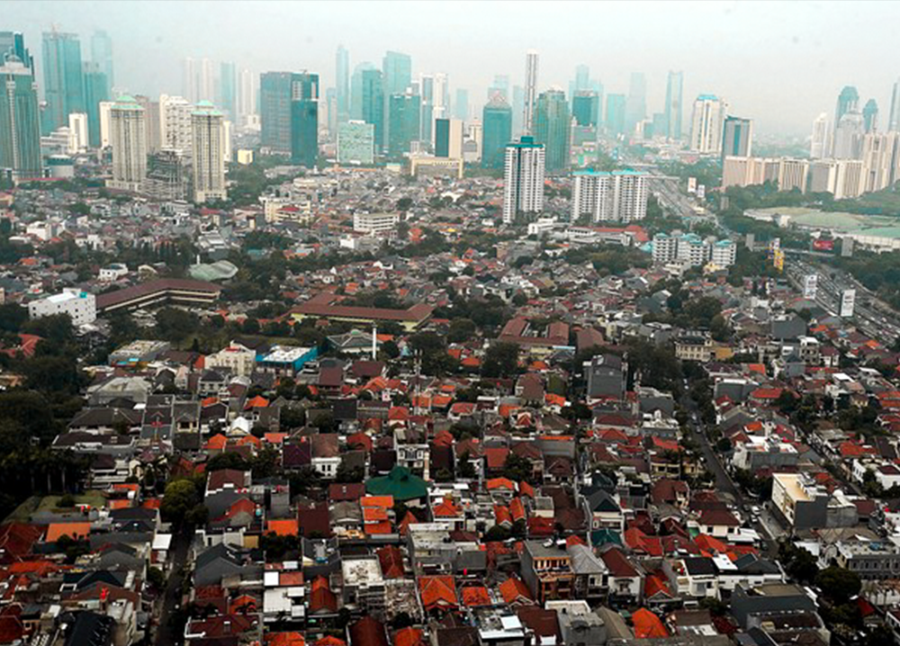
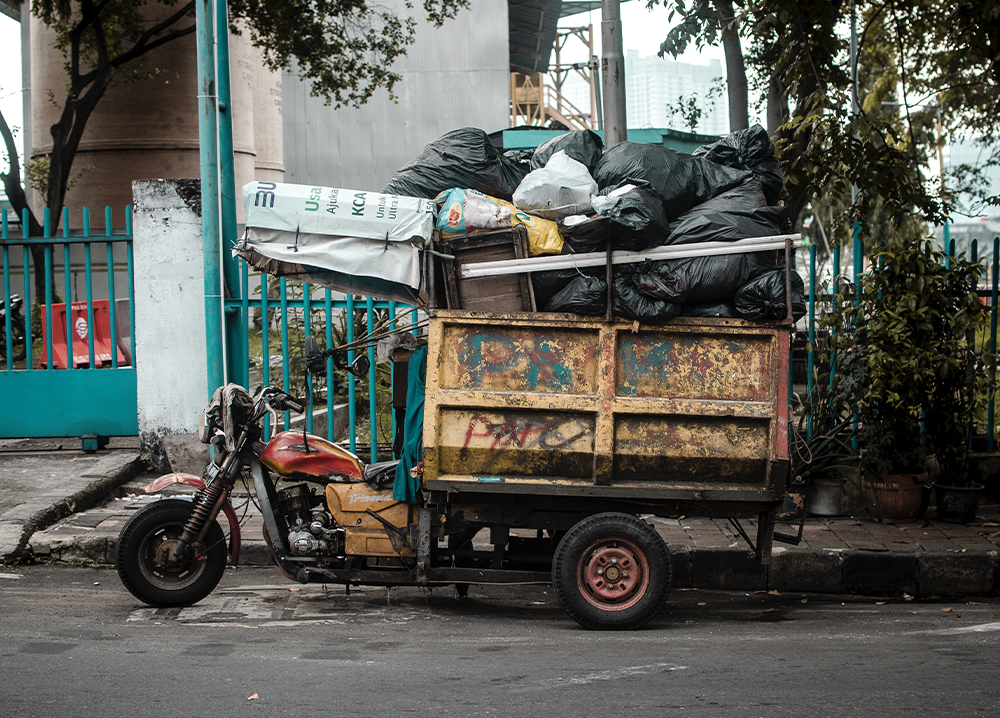
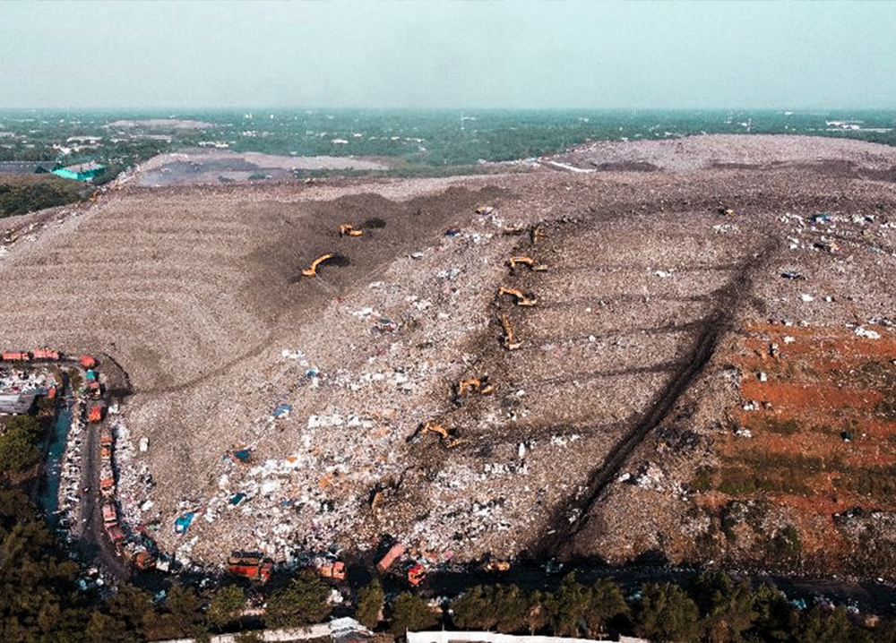

The Other Side of Jakarta
Behind the glittering city and tall skyscrapers, there is another side of Jakarta which has been a problem for a long time, namely poverty, social inequality, and slums that adorn the other side of life in the capital city.


